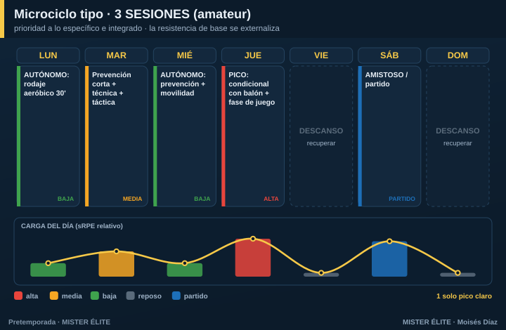

Plan · 3 SESIONES (amateur típico)
Para quién: el amateur más común, 3 sesiones por semana. Pretemporada: 6-8 semanas.
Principio rector: el tiempo es el recurso escaso, así que manda la prioridad absoluta a lo específico e integrado. Se prioriza táctica colectiva + condición con balón. No se sacrifica la prevención (poca, pero innegociable) ni el pico semanal de alta intensidad. Se externaliza la base aeróbica y el gimnasio → al trabajo autónomo.
Microciclo tipo

- Lunes — autónomo: rodaje aeróbico de 30' (mantiene la base).
- Martes — prevención corta + técnica + táctica (carga media, post-finde).
- Miércoles — autónomo: prevención + movilidad en casa.
- Jueves — EL PICO: condicional con balón (HIIT/SSG intensos) + fase de juego (carga alta).
- Sábado — amistoso / partido.
Un solo pico claro a mitad de semana. Con 3 sesiones es imposible (y contraproducente) meter dos picos: no daría el descanso entre ellos.
Las sesiones grupales reales son 3 (martes, jueves + el amistoso del sábado). Lunes y miércoles son trabajo autónomo del jugador (deberes), no entrenamiento de grupo.
Cómo se reparte la carga
- Lo físico y lo táctico se fusionan vía juegos reducidos: un SSG bien diseñado entrena las dos cosas a la vez.
- La resistencia de base se mantiene con carrera continua autónoma fuera del campo, porque el campo ya no da para eso.
- Espacia las 3 sesiones lo más posible (evita 3 días seguidos + 4 de nada): así no acumulas fatiga ni pierdes el estímulo.
Fuerza, velocidad y prevención
- Fuerza = microdosis de 10-15' integradas + deberes de gimnasio.
- Velocidad = bloque corto al inicio de la sesión más fresca, 1/semana.
- Prevención = 10-15' al inicio del martes, innegociable.
Amistosos
1/semana (fin de semana), desde la semana 2. Sustituyen una sesión de carga alta, no se suman encima.
Trabajo autónomo (imprescindible)
Es lo que mantiene la base que el grupo ya no puede dar: - 1-2 rodajes aeróbicos/semana (25-40' continua o fartlek). - Prevención de isquios y tobillo en casa + movilidad.
Sin estos deberes, con 3 sesiones grupales el equipo llega corto de base. Conviértelos en un hábito y contrólalos (un grupo de WhatsApp basta).
Progresión por fases (7 semanas tipo)
| Semana | Fase | Sesión grupal (pico jueves) | Autónomo | Sábado |
|---|---|---|---|---|
| 1 | Acumulación | Técnica + posesión a gran formato | 2 rodajes 30' | Test / suave |
| 2 | Acumulación | Posesión + primer HIIT con balón | 2 rodajes + prevención | Amistoso 1 |
| 3 | Transformación | HIIT/SSG + fase de juego | Rodaje + Nordic | Amistoso 2 |
| 4 | Transformación | SSG intenso + RSA + ABP | Rodaje + Nordic | Amistoso 3 |
| 5 | Transformación | Velocidad + automatismos | Prevención | Amistoso 4 |
| 6 | Realización | Ritmo de competición, once tipo | Reducir | Amistoso fuerte |
| 7 | Realización | Tapering | Mínimo | Debut |